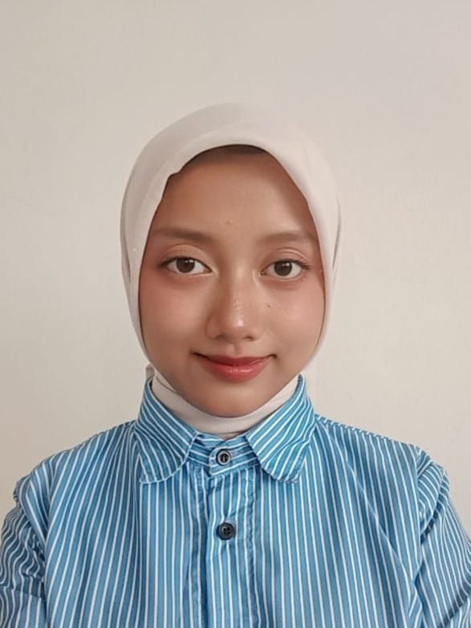

Halo, perkenalkan!
Hafizhah Azzahrani
Mahasiswa Bisnis Digital
Saya adalah mahasiswa Bisnis Digital yang tertarik pada dunia bisnis, teknologi, dan pemasaran digital. Saat ini saya sedang belajar membuat website menggunakan HTML, CSS, dan JavaScript.
Tentang Saya
Tentang Saya
Nama saya Hafizhah Azzahrani. Saya merupakan mahasiswa S1 Bisnis Digital di UIN K.H. Abdurrahman Wahid Pekalongan. Saya senang mempelajari hal baru, membaca, mendengarkan podcast, dan menonton film.
Melalui perkuliahan dan kegiatan organisasi, saya belajar mengenai komunikasi, kerja sama tim, pengelolaan kegiatan, serta strategi bisnis. Saya juga ingin mengembangkan kemampuan di bidang teknologi digital.
Pendidikan
| No. | Jenjang | Nama Institusi |
|---|---|---|
| 1 | Perguruan Tinggi | UIN K.H. Abdurrahman Wahid Pekalongan |
| 2 | SMA | SMA Islam Ahmad Yani Batang |
Skill
Berikut beberapa kemampuan yang sedang saya kembangkan.
Canva
Membuat desain dan konten visual.
Microsoft Office
Mengolah dokumen dan presentasi.
Komunikasi
Berkomunikasi dan bekerja sama dalam tim.
HTML dan CSS
Mempelajari dasar pembuatan website.
JavaScript
Mempelajari dasar interaksi pada website.
Project dan Pengalaman
Seminar Nasional BIGIFEST 2026
Terlibat sebagai ketua pelaksana dalam perencanaan dan koordinasi kegiatan seminar nasional mengenai digitalisasi UMKM dan literasi finansial.
Personal Portfolio Website
Membuat website portofolio sederhana sebagai latihan mata kuliah Web Programming dengan menggunakan HTML, CSS, dan JavaScript.
Hubungi Saya
Silakan isi formulir berikut untuk menyampaikan pesan.